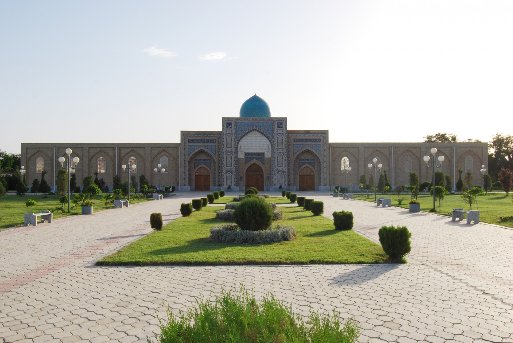
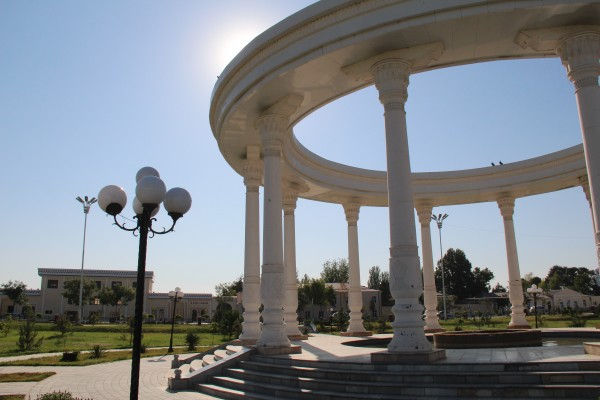
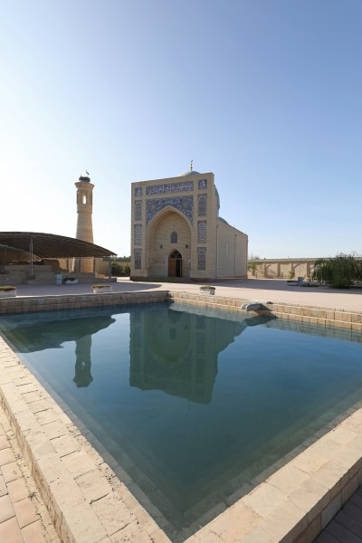

Карши - Сквозь призму богатой истории
Климат
Климат можно охарактеризовать как степной, очень засушливый с минимальным количеством дождей. Летом жарко, а зимы часто бывают холодные, но бесснежные.
Подарки и сувениры
Приезжая в Карши, не забудьте купить сувениры с изображением местных достопримечательностей на память. В городе можно найти расписную посуду с изображением местных орнаментов, подставки для книг, деревянные шкатулки с резными узорами и конечно же украшения с сделанные местными мастерами из драгоценных и полудрагоценных металлов.
Кухня
Путешествуя по Узбекистану ни в коем случаи не исключайте Карши из своей гастрономической карты. Одним из самых знаковых блюд здесь является тандыр-гушт из баранины приправленной зирой запечённого по рецептам, пришедшим к нам еще из далекой древности. Еще одно блюдо местной кухни, которое не оставит Вас равнодушными – это самса! Невозможно передать этот волшебный запах самсы только что вытащенной из тандыра. Она обычно подается с острым помидорным соусом. Среди всего изобилия блюд, которые готовят здесь можно выделить кашкадарьинский плов, чучвару (маленькие пельмени) и нохот-шурпу. Также тут делают неповторимый напиток из кислого молока называемый чалоп.
История
По данным археологов, первое поселение на территории города возникло примерно в VII веке до н.э. В тоже самое время вокруг города была возведена первая оборонительная стена, руины которой сохранились по сей день. В то древнее время поселение носило название Навтак, что в переводе с согдийского означает «новое здание».
Город находился на территории Великого Шелкового пути, поэтому он был лакомым кусочком для завоевателей. Через него проходил путь из Самарканда и Бухары в Индию. Затем в промежутке между IX и XIV века город назывался Нахшаб и в 1346 году, по приказу Тамералана здесь был возведен укрепленный дворец, из-за которого город и получил современное название – Карши, что переводится с тюркского как «укрепление». Начиная с этого времени город постоянно расцветал и улучшался. На время правления династии Шейбанидов пришелся пик его развития и уже к XVIII веку он был вторым городом в Бухарском ханстве. Сейчас городу Карши уже 2700 лет и он является административным центром Кашкадарьинской области. На территории города сохранилась множество исторических достопримечательностей.